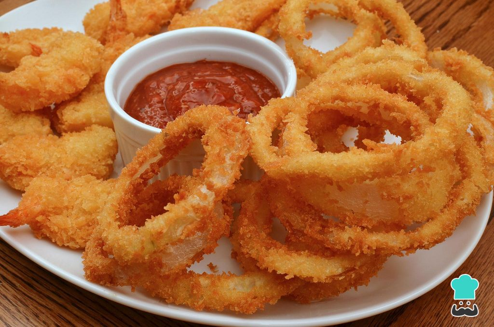
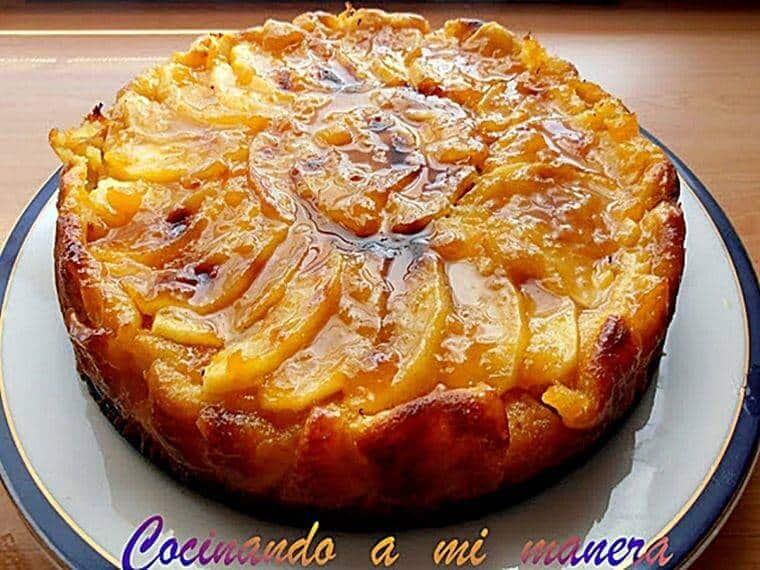

Los Estados Unidos es el tercer país más grande del mundo en cuanto a su población y el cuarto más grande en superficie. Está compuesto por 50 estados cuya capital es Washington distrito federal, D.F. ... En la actualidad, EEUU recibe más de 500,000 estudiantes internacionales en muchas sus universidades.
Las banderillas de salchicha o corndogs, es una receta típicamente estadounidense. Consiste en una salchicha frankfurt, pinchada con una brocheta y envuelta con una tempura de harina de trigo y maíz, huevo y leche.
Lo primero, es empalar las salchichas frankfurt con los palos de brocheta. metemos la brocheta por uno de sus extremos, hasta llegar casi al extremo opuesto de la salchicha.
Preparamos la tempura. En un bol ponemos la harina, el huevo, si queremos el pimentón que añadirán algo de sabor y de color, la cucharadita de sal, la levadura y la leche. La cantidad exacta de leche varía ya que, dependerá del tamaño del huevo que hayas utilizado y de la marca de harina ya que, no todas las marcas absorben la misma cantidad de líquido. Lo batimos bien con una varilla de mano. Que no queden grumos en la masa. La idea es que, una vez batido, la masa se pegue un poquito a la varilla pero, que caiga enseguida. Ese es el punto exacto que deseamos (una masa líquida pero, con bastante cuerpo)
Ponemos la masa en un vaso alto u otro recipiente alto.
Ahora metemos las salchichas en el vaso y las impregnamos bien de la masa.
Finalmente, retiramos el exceso de masa y las freímos. Esta masa es muy delicada así que, el fuego debe estar alto pero, tampoco demasiado o si no, se quemarían. Una vez fritas, las dejamos reposar sobre papel absorbente antes de comer. ¡Y listo! Como ves, estas banderillas de salchicha o corndogs no pueden ser más fáciles de hacer. Y es un excelente aperitivo para los más peques de la casa (y no tan peques). ¡No va a sobrar ni una!
AROS DE CEBOLLA

Receta
Los aros de cebolla crujientes son una de las comidas fritas que más encantan a los más pequeños (y también a muchos de los no tan pequeños, entre los que me incluyo) y que se suele servir en los propios establecimientos de comida rapida. Así que aquí aprenderemos a hacerlos caseros, siempre serán mejores que en cualquier lugar de comida rápida.
Pelamos la cebolla y quitamos la primera capa que, es un poco durita. La cortamos en rodajas finas, de abajo a arriba de la cebolla y de 1cm de grosor, para que queden en forma de aro.
Después, separamos con los dedos las diferentes capas de la cebolla para conseguir los aritos.
Metemos los aros de cebolla en agua fría durante unos 30 minutos. Desechamos aquellas partes que no hayan conservado su forma redonda o que sean demasiado pequeñas para hacer aros de cebolla con ellas (En la cocina, nunca tiramos nada. Estos restos sirven para otra elaboración).
En un bol amplio mezclamos la harina, una cucharada de levadura química, la cerveza bien fría u otra bebida carbonatada, como gaseosa o sifón, una cucharadita de sal, otra de pimentón y mezclamos todo bien con un tenedor hasta que quede una especie de crema, sin grumos. Tiene que quedar con cierto espesor pero más bien líquido.
Escurrimos los aros de cebolla del agua, les echamos una pizquita de sal y las metemos en la mezcla, asegurándonos de que se impregnen bien de ella. Cogemos ahora nuestros aros de cebolla, les retiramos el exceso de masa y los pasamos por pan rallado. Reservamos en un plato y seguimos haciendo más aros de cebolla, hasta acabar con todos.
freímos los aros de cebolla a fuego fuerte en abundante aceite de oliva. Pasados unos 30 segundos, los retiramos, dejando que reposen sobre una rejilla para escurrir el exceso de aceite sin que se ablanden. Así quedarán crujientes. ¡Y ya tienes tu plato casero, típico de restaurante de comida rapida hecho! Si quieres que tus aros de cebolla fritos caseros queden con más masa exterior, puedes echar una menor proporción de cerveza a la masa. A menor proporción de líquido, con más masa quedarán. Y no olvides el empanizado. ¡Los hará extra crujientes!
TARNTA DE MANZANA

Receta
¿Quién no conoce la tarta de manzana?. Un más que popular postre que tiene muchas variantes. En esta ocasión, vamos a prepararla con una base de galleta y mantequilla que, se hace de manera muy fácil y rápida. Veremos todo ésto, paso a paso. Esta tarta de manzana casera requiere de muy pocos ingredientes y para pesarlos, necesitaremos un vaso de 200ml, el cual utilizaremos como vaso medidor de todos los demás ingredientes.
Trituramos la galleta. Para ello puedes hacerlo con una batidora americana, una batidora manual o introduciendo las galletas en una bolsa y sacudiéndolas con un rodillo. Después las ponemos en un plato, le añadimos la mantequilla derretida y mezclamos bien con una cuchara. Quedará como una especie de arena gruesa húmeda. Ésto, será la base de nuestra tarta de manzana.
Ponemos esta mezcla en el fondo de un molde desmontable para tartas. Con estas cantidades, en uno de 18-20cm, estará bien. Untamos el molde con aceite o con más mantequilla derretida (para que no se pegue la tarta) en introducimos la mezcla de galleta y mantequilla. Esta mezcla será la base de la tarta de manzana. La aplastamos y extendemos por toda la superficie del molde, de tal manera que quede bien compacta. Ésta será la base de nuestra tarta de manzana.
Ahora, de nuevo en una batidora americana o un en un vaso batidor, añadimos 4 de las manzanas peladas, sin el corazón y cortadas en cubo, la harina, la leche y el azúcar. Trituramos todo bien.
Introducimos esta mezcla -que se tratará simplemente del relleno de la tarta de manzana- sobre la base de galleta y mantequilla. Encima, ponemos las otras dos manzanas, también peladas y cortadas en láminas muy finas. Colócacas un poco a lo loco, al azar, o intenta darles una forma armoniosa, si te importa la decoración.
Introducimos todo en el horno, previamente calentado a 180ºC. Dejamos aquí durante alrededor de 50 minutos.
Pasado el tiempo, la sacamos y dejamos templar la tarta de manzana un poco. Un consejo. En este caso, no te fies del viejo truco de pinchar con el palillo porque esta tarta, no termina de cuajar hasta que se haya enfriado por completo. Por ello, mejor esperar a que se enfríe.
Una vez fuera del horno, y después que se haya templado un poco, la desmoldamos y la pintamos por toda su superficie con la mermelada. Le dará un toque muy brillante y mejorará mucho su sabor Es fácil preparar esta tarta de manzana. Existen variantes más complicadas pero, debido a su sencillez y a que además, está deliciosa ¡Esta es mi receta favorita para este postre.